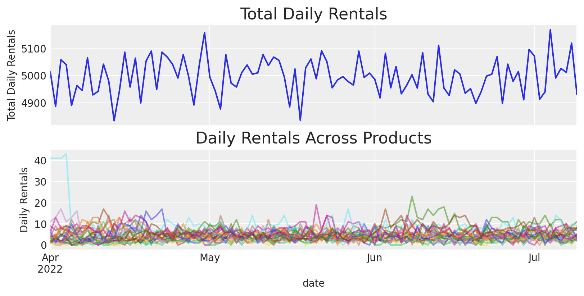
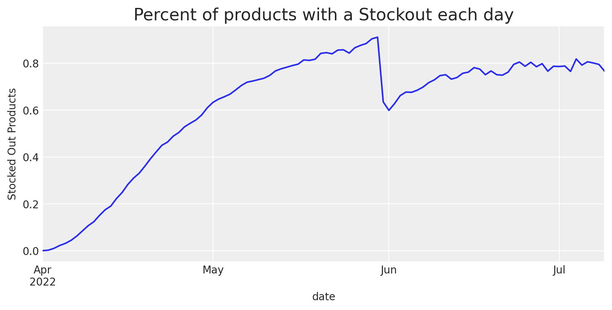
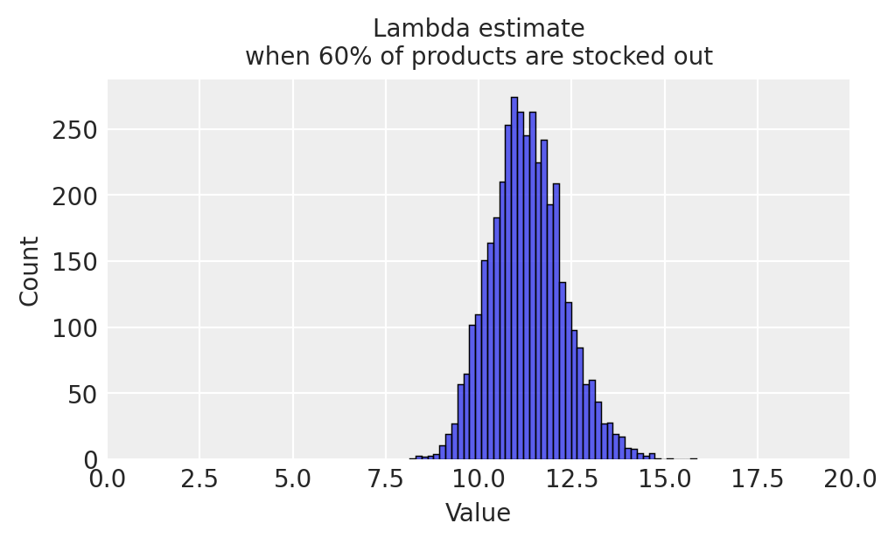
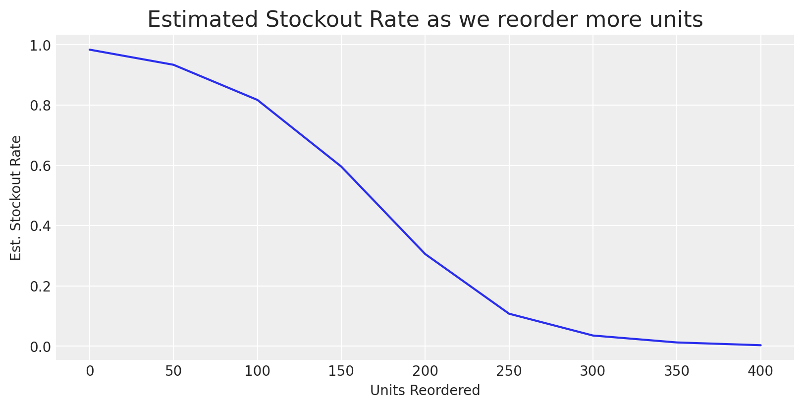

Modeling Anything With First Principles: Demand under extreme stockouts
Time Series
Demand Modeling
Causal Inference
Supply Chain
Discrete Choice
Survival Analysis
Published
July 9, 2023
Introduction
The Problem: You work at a rental service that is suffering from high periods of churn. You’ve found that stockouts are one of the biggest reasons for churn - despite having plenty of products, they tend to only be available 60-80% of the time. How can we determine how much stock to reorder?
The idea of this project is to borrow ideas from first principles modeling - think about the data generating process and model each step of it. This example borrows ideas from discrete choice literature, survival analysis, demand forecasting, and simulation.
Products with extreme stockouts have misleading demand estimates under classic demand models.
The basis of these ideas is really simple. If we only have 5 units of a product in stock, and we saw 5 sales (or rentals in this case) that day, then we know that the observed demand would’ve been atleast 5 rentals if stock levels didn’t constrain it.
Typical demand modeling might only look at the count of rentals each day, while censored demand modeling would look at both rental counts and stock levels, and incoporate both of these pieces of information.
The idea is to start simple(-ish) and add complexity. We’ll first model a single product and test different ordering policies, and then begin modeling multiple products.
The original code including the full simulation of the dataset can be found here.
Part 1: Looking at the data
Code
import numpy as npimport pandas as pdimport matplotlib.pyplot as pltimport seaborn as snsimport arviz as azimport matplotlib.ticker as mtickimport jaxfrom jax import random import jax.numpy as jnpimport numpyroimport numpyro.distributions as distfrom plotting import plot_rentalsimport warningswarnings.filterwarnings("ignore")# Plot stylingplt.style.use("arviz-darkgrid")plt.rcParams.update({'axes.labelsize': 14,'axes.titlesize':22, 'font.size': 14, 'legend.fontsize': 14, 'xtick.labelsize': 14, 'ytick.labelsize': 14})# Global varsSEED =100BASE_URL ='https://raw.githubusercontent.com/kylejcaron/case_studies/main/censored_demand'# Load in csv datarentals = (pd.read_csv(f"{BASE_URL}/data/rentals.csv") .assign(date=lambda d: pd.to_datetime(d.date)) )stock = (pd.read_csv(f"{BASE_URL}/data/stock_levels.csv") .assign(date=lambda d: pd.to_datetime(d.date)) )purchases = (pd.read_csv(f"{BASE_URL}/data/product_purchases.csv") .assign(date=lambda d: pd.to_datetime(d.date)) )J_PRODUCTS, MAX_PERIODS =1000, 10000
We have three datasets:
rentals showing rental events and when those rentals were returned for a single product
stock showing available stock levels for that product over time
product_purchases showing how much was bought for each product and when
rentals.head()
rental_id
date
return_date
product_id
0
7ee46d21-bf37-45a9-a03d-3cc36e08d422
2022-04-01
2022-05-12
product_0
1
cfefc50c-178d-4666-a97b-608d37cb771f
2022-04-02
2022-04-18
product_0
2
53bcc895-3f56-4c2c-8046-4bbda06848e6
2022-04-03
2022-04-09
product_0
3
e0381b64-2001-4f84-957f-3b864a7dcb99
2022-04-04
2022-06-07
product_0
4
422f73f1-ba66-4cb2-94a3-cd314aea9fd5
2022-04-05
2022-05-05
product_0
stock.head()
product_id
date
starting_units
ending_units
0
product_0
2022-04-01
110.0
109.0
1
product_0
2022-04-02
109.0
108.0
2
product_0
2022-04-03
108.0
107.0
3
product_0
2022-04-04
107.0
106.0
4
product_0
2022-04-05
106.0
105.0
purchases.head()
product_id
units
date
order_type
0
product_0
110.0
2022-04-01
new_product
1
product_1
60.0
2022-04-01
new_product
2
product_2
90.0
2022-04-01
new_product
3
product_3
110.0
2022-04-01
new_product
4
product_4
160.0
2022-04-01
new_product
Plotting Product Rentals
Lets convert the rental data to time series data and see what it looks like
It looks like there are typically 0-15 rentals per day for a given product, and there are typically 5000 rentals total each day.
Looking at the distribution of total rentals across products, we see that it is mildly long-tailed.
Code
fig, ax = plt.subplots(1,1,figsize=(5,3),sharex=True)ax.set_xlabel("Rentals",fontsize=10)ax.set_ylabel("Count",fontsize=10)ax.set_title('Distribution of total rentals\nper product in observation period', fontsize=10)sns.histplot( daily_rentals.groupby("product_id").sum(),ax=ax )plt.show()

We can also see that stockouts are extremely prevalent - on a given day, up to 85% of products could be stocked out. A recent reorder in June helped a little but not enough. How can we reduce the stockout problem and reorder accordingly?
Code
fig, ax = plt.subplots(1,1,figsize=(12,5))(stock .assign(stockout_rate=lambda d: d.ending_units==0) .groupby("date").stockout_rate.mean() .plot(ylabel='Stocked Out Products',title='Percent of products with a Stockout each day'))plt.show()

Looking at a single product
We’re going to start with a single product and see if we can come up with a system that informs us how many units we should reorder.
As shown above, just looking at a time series of rentals each day is a bit confusing - there are seemingly random spikes in demand for just this product that dont seem to line up with spikes in total demand across products.
When we look at the stockout rate across all products over time, it looks like the stockout rate drops at the same time demand increases for Product ID 165.
Let’s join stock data to rental data and see whats happening for this product.
Now that we have this data joined, we can plot the rental data with corresponding stock data.
Code
ax = plot_rentals( daily_rentals = daily_rentals.loc[f'product_{j}'].rentals, daily_stock = daily_rentals.loc[f'product_{j}'].starting_units,)ax.axvline(reorder_date, color='k', ls='--', label='Reorder: new units added to inventory')ax.legend()plt.show()
For most of the days in the product’s lifetime, there are as many rentals as there are units available. This indicates we’re probably understocked - if we had more stock available, we’d likely observe more rentals.
This is also apparent in the overstocked periods - at the start of the product’s lifetime there tends to be more rentals. There’s also a reorder that happens in June, where the business procured new units of that product to rent out to customers. We can see that there’s a jump in observed rentals
It’s time to introduce a key concept - the difference between rental demand and observed rentals:
Rental demand is the true demand to rent the product each day.
Observed rentals are the number of rentals we actually observe in the data, after random noise is added to demand and it gets constrained by stock levels.
Part 2: Modeling the problem
First, lets reiterate our goal. We want to know how many more units to purchase for this rental product so we don’t end up with any more stockouts. To do so, we need to know what stock levels will be if we have more units in stock.
When we think of the data generating process for rental demand and stock levels it is the following:
Customers come in and rent \(y \sim \text{min}(\text{Poisson}(\lambda), \text{stock})\) units each day
Those units tend to have some learnable distribution of rental duration, \(t \sim \text{LogNormal}(\theta, \sigma)\)
The stock levels vary as those rentals occur and get returned from steps (1) and (2)
This narrows the problem down - we need to identify unconstrained rental demand (how many rentals would we get if we had perfect stock), and rental duration. We can use models for both (1) and (2) and then simulate different potential outcomes.
Here’s a look at the overall plan
Fit a rental duration model
Fit a censored demand model
Combine both of those into a stock level simulation
Simulate out different purchase volumes that lead to a low chance of stockouts.
Purchase that volume of units
Expand the model to incorporate many products
Increase the complexity of the simulation and the model - i.e. what happens if we add seasonality to the demand? What happens if there are demand shocks?
Rental Duration Model
The plan for now is to model the unconstrained demand for this single product - whats the actual rental demand for the product? How many rentals would it get if there weren’t stockouts? Lets start off by looking at our data.
Preparing the data
It’s easy to see that there are plenty of rentals that are still out with customers and haven’t been returned yet. For these unreturned rentals, we can’t calculate an accurate rental duration.
Code
rentals.sample(10, random_state=SEED)
rental_id
date
return_date
product_id
336567
9a0c22af-d234-4967-af33-904dc2063f07
2022-05-05
2022-05-30
product_661
372791
781e6d0a-c94c-4a34-8447-5dee6002248e
2022-05-28
NaN
product_739
316499
9c1cce54-62df-45e2-9a33-3cf1ee3056e7
2022-06-15
NaN
product_622
235191
4ce955dd-773c-443c-ae28-d4ce018686e2
2022-06-19
2022-06-29
product_459
299770
842f7574-3784-41f8-a627-29cf7d622b9e
2022-06-04
2022-06-23
product_591
39846
366afbe0-805b-46ac-a25b-018aa35367f7
2022-05-30
NaN
product_78
395599
dd13bd67-3d1e-464a-8cb9-c2205e050815
2022-04-09
2022-04-19
product_787
70230
0193f7c4-a229-41a4-8872-3277229980a9
2022-04-16
2022-05-01
product_139
449004
4b7c426e-ac62-4467-8b95-0397f8aff0ce
2022-07-06
NaN
product_895
90329
632f806f-c782-4680-8464-f3ffafe4a9f5
2022-05-16
2022-06-09
product_178
It’s important to remember that even though these items aren’t returned, some have been rented out for 30, 40, 50 days, and it is important information to know that some items have been out for at least that long. A good example is that if it is possible for some items to be rented out for 200 days, but we’ve only observed 100 days of activity, then whatever we estimate for the rental duration would be underestimated if we just used basic averaging.
What we can instead do is calculate the rental duration to date and then use a survival model to properly incorporate those unreturned items.
We can write up a survival model in numpyro. The idea of survival analysis is that:
if a return has already occurred, we fit the model as usual with the observed rental duration.
If a return hasn’t occurred yet, we tell the model that the rental duration is at least as long as has been observed so far. This is done with stats via a survival function, or the complementary CDF (ccdf)
For simplicity, we’re assuming the data is lognormally distributed (and we simulated the data that way). In reality, it is best to plot distributions of your data and decide for yourself.
def censored_lognormal(theta, sigma, cens, y=None):# If observed, this is the likelihood contribution numpyro.sample("obs", dist.LogNormal(theta, sigma).mask(cens !=1), obs=y)# If not observed, use the survival function as the likelihood constribution ccdf = numpyro.deterministic("ccdf", 1- dist.LogNormal(theta, sigma).cdf(y)) numpyro.sample("censored_label", dist.Bernoulli(ccdf).mask(cens ==1), obs=cens)def survival_model(E, T=None): theta = numpyro.sample("theta", dist.Normal(2.9, 1)) sigma = numpyro.sample("sigma", dist.Exponential(0.7))with numpyro.plate("data", len(E)): censored_lognormal(theta, sigma, cens=(1-E), y=T)
We can now use numpyro to fit a model and estimate the typical rental duration.
Remember, this is simulated data so we know the truth and can use that as a way to test this is working - a correctly specified model should recover the the true parameter values.
Great, now we have a rental duration model fit, we just need to estimate demand.
Rental Demand Model
Looking at the demand data
The rental demand model is going to start simple for this single-product case - we’ll just estimate a poisson distribuion.
Taking a look at the data again, it is clear that demand is constrained, or censored, by stockouts here.
Code
ax = plot_rentals( daily_rentals = daily_rentals.loc[f'product_{j}'].rentals, daily_stock = daily_rentals.loc[f'product_{j}'].starting_units)ax.axvline(reorder_date, color='k', ls='--', label='Reorder: new units added to inventory')plt.legend()plt.show()
To confirm this is the case, we can take a look at the typical number of rentals when there is a stockout vs. when there isn’t - observed rentals are lower on days when there are stockouts - the sample size of stocked out periods is also smaller.
We can leverage survival analysis again to estimate demand. We define a censored poisson model below that assumes demand is constant over time and if there’s a stockout, the model thinks that rentals might’ve been higher than observed if there was more stock, otherwise if there’s no stockout it thinks that demand is the number of rentals that day (plus some noise of course)
def censored_poisson(lambd, cens, y=None):# If observed, this is the likelihood contribution numpyro.sample("obs", dist.Poisson(lambd).mask(cens !=1), obs=y)# If not observed, use the survival function as the likelihood constribution ccdf =1- dist.Poisson(lambd).cdf(y) pmf = jnp.exp(dist.Poisson(lambd).log_prob(y)) # need to include the pmf for discrete distributions numpyro.sample("censored_label", dist.Bernoulli(ccdf+pmf).mask(cens ==1), obs=cens)def demand_model(stockout, X, y=None):# parameters alpha = numpyro.sample("alpha", dist.Normal(2, 2)) beta = numpyro.sample("beta", dist.Normal(0, 1))with numpyro.plate("data", len(stockout)):# regression log_lambd = numpyro.deterministic("log_lambd", # base demand alpha # covariate influence on demand - in this case cross product effect# as more products go out of stock, demand for the remaining in-stock products increases+ jnp.dot( X, beta ) )# demand as a rental rate per day lambd = numpyro.deterministic("lambd", jnp.exp(log_lambd))# Observational model censored_poisson(lambd, cens=stockout, y=y)
We can check the estimated rental rate parameter, \(\lambda\), against the actual value that we simulated and find that our model does have coverage over the ground truth.
Note that this is the base level of demand for the product - as competing products stock out, we expect \(\lambda\) to increase. Currently, that is represented by \(\beta\) in the model above, which is the relationship of the products demand to global stockout rate. As global stockout rate climbs, \(\lambda\) increases. We can roughly estimate lambda at differen’t stockout levels.
Code
# Plotfig, ax = plt.subplots(figsize=(5,3))global_stockout_rate=0.6bX = idata_demand['beta']*global_stockout_ratesns.histplot( np.exp(idata_demand['alpha'] + bX),ax=ax )ax.set_xlabel("Value",fontsize=10)ax.set_ylabel("Count",fontsize=10)ax.set_title("Lambda estimate\nwhen 60% of products are stocked out", fontsize=10)ax.set_xlim(0,20)plt.show()

Now that we have a rental duration model and a rental demand model, lets build a simulation.
Part 3: Simulation
The simulation code
We can leverage numpyro to simulate this. They have a scan operator that iterates day over day which fits well with this problem. Here’s the initial simulation model structure.
We’ll start by building a base class, RentalInventory that can be inherited by other classes. If you look at the model method, it takes in an initial state, and iterates over the model_single_day method each day we tell it to.
The model_single_day method simulates returns and rentals each day, and logs them.
class RentalInventory:"""A model of rental inventory, modeling stock levels as returns and rentals occur each day. Currently supports a single product """def__init__(self, n_products: int=1, policies: np.ndarray =None):self.n_products = n_productsself.policies = policies if policies isnotNoneelse jnp.zeros((n_products, 10000))# Rentals that are out with customers are stored as an array, where the index corresponds with time, # and the value corresponds with the number of rentals from that time that are still out with customers# max_periods is the total number of periods to logself.max_periods =10000def model(self, init_state: Dict, start_time: int, end_time: int) -> jnp.array:"""The Rental Inventory model. Each day returns occur as represented by a lognormal time to event distribution, and rentals occur as simulated by a poisson distribution and constrained physically by stock levels. """ _, ys = scan(self.model_single_day, init=init_state, xs=jnp.arange(start_time, end_time) )return ysdef model_single_day(self, prev_state: Dict, time: int) -> Tuple[Dict, jnp.array]:"""Models a single day of inventory activity, including returns, rentals, and stock changes """ curr_state =dict()# Simulate Returns returns =self.returns_model(prev_state['existing_rentals'], time) curr_state['starting_stock'] = numpyro.deterministic("starting_stock", prev_state['ending_stock'] + returns.sum(1) +self.apply_policy(time))# Simulate Rentals, incorporate them into the next state rentals =self.demand_model(available_stock=curr_state['starting_stock'], time=time) curr_state['ending_stock'] = numpyro.deterministic("ending_stock", curr_state['starting_stock'] - rentals.sum(1)) curr_state['existing_rentals'] = numpyro.deterministic("existing_rentals", prev_state['existing_rentals'] - returns + rentals)return curr_state, rentals ...
The sub-models and methods referenced but not shown above are a little complicated and overwhelming with the array operations and logic however, so feel free to skim over this for now.
class RentalInventory ... ...def demand_model(self, available_stock, time):"""Models the true demand each day. """raiseNotImplementedError()def returns_model(self, existing_rentals: jnp.array, time: int) -> jnp.array:"""Models the number of returns each date """# Distribution of possible rental durations theta = numpyro.sample("theta", dist.Normal(2.9, 0.01)) sigma = numpyro.sample("sigma", dist.TruncatedNormal(0.7, 0.01, low=0)) return_dist = dist.LogNormal(theta, sigma)# Calculate the discrete hazard of rented out inventory from previous time-points being returned discrete_hazards =self.survival_convolution(dist=return_dist, time=time)# Simulate returns from hazards returns = numpyro.sample("returns", dist.Binomial(existing_rentals.astype("int32"), probs=discrete_hazards)) total_returns = numpyro.deterministic("total_returns", returns.sum())return returnsdef survival_convolution(self, dist, time: int) -> jnp.array:"""Calculates the probability of a return happening (discrete hazard rate) from all past time periods, returning an array where each index is a previous time period, and the value is the probability of a rental from that time being returned at the current date. """ rental_durations = (time-jnp.arange(self.max_periods)) discrete_hazards = jnp.where(# If rental duration is nonnegative, rental_durations>0,# Use those rental durations to calculate a return rate, using a discrete interval hazard function RentalInventory.hazard_func(jnp.clip(rental_durations, a_min=0), dist=dist ),# Otherwise, return rate is 00 )return discrete_hazards@staticmethoddef hazard_func(t, dist):"""Discrete interval hazard function - aka the probability of a return occurring on a single date """return (dist.cdf(t+1)-dist.cdf(t))/(1-dist.cdf(t))def apply_policy(self, time):"""Adds in some number of units for the product at time T=t """returnself.policies[time]
One key thing to note is the demand_model method raises a NotImplementedError the idea is that this base class can be inherited by other classes that may have different demand models. Even the returns model could be overwritten. Here’s an example of a poisson demand model:
class PoissonDemandInventory(RentalInventory):"""A model of rental inventory, modeling stock levels as returns and rentals occur each day. Currently supports a single product """def__init__(self, n_products: int=1, policies: np.ndarray =None):super().__init__(n_products, policies) rng = np.random.default_rng(seed=99)# Heterogeneity in true demand is lambd ~ Exp(5) distributed when using this class to simulate data from scratch# When simulating demand based on an existing dataset, this can be overwritten# i.e. `numpyro.do(inventory.demand_model, {"lambd": jnp.exp(U_hat)})`self.U = jnp.log( 5* rng.exponential( size=n_products) )def demand_model(self, available_stock, time):"""Models the true demand each day. """with numpyro.plate("n_products", self.n_products) as ind: lambd = numpyro.sample("lambd", dist.Normal(jnp.exp(self.U[ind]), 0.001)) unconstrained_rentals = numpyro.sample("unconstrained_rentals", dist.Poisson(lambd)) rentals = numpyro.deterministic("rentals", jnp.clip(unconstrained_rentals, a_min=0, a_max=available_stock )) rentals_as_arr = ( time == jnp.arange(self.max_periods) )*rentals[:,None]return rentals_as_arr
Rentals are simulated according to a poisson distribution for each product, and if there isn’t enough stock, then rentals are constrained. For example:
There are some helper functions in the code block below that we’ll use. Feel free to skip past these. They’re used to transform data from long form into a wide form where time periods are the column axis and each product is an row.
Code
from rental_model import RentalInventory, PoissonDemandInventory, MultinomialDemandInventory# Helper functionsdef sort_products(df): idx =list(df.index.names)if idx[0] isnotNone:return ( df.reset_index() .assign(idx=lambda d: d.product_id.str.split("_",expand=True)[1].astype(float)) .sort_values(by="idx").drop('idx',axis='columns') .set_index(idx) )else:return ( df .assign(idx=lambda d: d.product_id.str.split("_",expand=True)[1].astype(float)) .sort_values(by="idx").drop('idx',axis='columns') )def get_active_rentals_as_array(rentals: pd.DataFrame, max_periods: int=10000) -> np.array:"""Take a dataframe of rental data and convert it to an array of currently active rentals and the days they were initially rented. Each array element corresponds to a single day, and the value is the amount of active rentals that are still out with customers that started on that date """def _get_active_rentals_as_array(rentals, dates, max_periods=10000):"""Gets currently active rentals for a single product """ active_rentals = np.zeros(max_periods) active_rentals[:len(dates)] = (rentals.loc[lambda d: d.return_date.isnull()].date.values == dates[:,None]).sum(1)return active_rentals start_date, end_date = rentals.date.agg(['min', 'max']) dates = pd.date_range(start_date, end=end_date, freq='D').values products = rentals.pipe(sort_products).product_id.unique() active_rentals = np.zeros((len(products), max_periods)) # Create an empty matrix to store results# Iterate through each productfor j, product_j inenumerate(products):# Store their currently active rentals active_rentals[j] = _get_active_rentals_as_array(rentals.query(f"product_id==@product_j"), dates=dates, max_periods=max_periods)return active_rentalsdef reorder_as_array(reorder_amount, reorder_time, max_periods=10000):return (jnp.arange(max_periods) == reorder_time)*reorder_amount
The convenience function below combines all of the helper functions above to transform rental and stock data into a usable form for the model.
# set initial state to last observed state in datasetdef get_current_state(rentals, stock): active_rentals = get_active_rentals_as_array(rentals) latest_starting_stock = stock.query("date==date.max()").pipe(sort_products).starting_units.values latest_ending_stock = stock.query("date==date.max()").pipe(sort_products).ending_units.valuesreturndict( starting_stock=latest_starting_stock, ending_stock = latest_ending_stock, existing_rentals=active_rentals )init_state = get_current_state( rentals=rentals.query(f"product_id=='product_{j}'"), stock=stock.query(f"product_id=='product_{j}'"))
We can now simulate what might happen if we re-stocked different amounts.
# Try adding new units at time T=100reorder_amount =150reorder_policy = reorder_as_array(reorder_amount, reorder_time=100)[None,:]# Define Simulationnsamples =250rental_inventory = PoissonDemandInventory(n_products =1, policies=reorder_policy)simulation = numpyro.infer.Predictive( rental_inventory.model, num_samples = nsamples,# Input our learned parameters from the previous models posterior_samples={"lambd":idata_demand['lambd'][:nsamples,[-1]], "theta":idata['theta'][:nsamples,None],"sigma":idata['sigma'][:nsamples,None] })# Run Simulationresults = simulation(random.PRNGKey(SEED), init_state, start_time=100, end_time=200)
The code above runs a full series of 250 simulations. Ideally in the future, the lambda parameter would be a forecast as opposed to just using the latest rental rate, but that’s a problem for later.
Let’s look at one potential outcome of the simulation. You can try re-running this multiple times to see a range of different outcomes that are all possible under this reorder policy. Most of these end up still being stocked out.
We can summarize all of these simulations with uncertainty intervals.
Code
fig, axes = plt.subplots(2,1, gridspec_kw=dict(width_ratios=[15], height_ratios=[10,1]), sharex=True, figsize=(12,6))# Plot simulationsdaily_ending_stock_sim = results['ending_stock'].squeeze(-1)az.plot_hdi(dates[100:], daily_ending_stock_sim, smooth=False,ax=axes[0], color='r', fill_kwargs=dict(alpha=0.25),)axes[0].plot(dates[100:], daily_ending_stock_sim.mean(0), color='r', ls='--', label='Simulated Stock Levels')# axes[0].axvline(dates[60], color='C0',ls='--', label='Reorder (40 units)')axes[0].axvline(dates[100], color='k',ls='--', label='Reorder')axes[0].set( title=f'Simulated Stock Levels: what would happen after reordering {reorder_amount} units?', ylabel='Stock Levels', xlabel='')# Plot actualshistorical_data.ending_units.plot(color='k',ax=axes[0], label='Historical Stock Levels')# Overlay some simulations to confirm its lining up with the plotaxes[0].plot(dates[100:], daily_ending_stock_sim[:20,:].T, alpha=0.1, color='k');axes[0].plot(dates[100:], daily_ending_stock_sim[0,:].T, alpha=0.1, color='k',label='Individual Simulations');axes[0].legend()# plot stockoutshistorical_stockouts = dates[:100][(historical_data.ending_units==0).values]sim_stockouts = np.unique(dates[100:][np.where((daily_ending_stock_sim.T==0))[0]])axes[-1].vlines(historical_stockouts,0,1, color='r', lw=5)axes[-1].vlines(sim_stockouts,0,1, color='r', lw=5)axes[-1].set_yticks([])axes[-1].annotate("Stockouts", xy=(0.01, 0.2),xycoords='axes fraction', fontsize=14)plt.show()
This view makes it a little more obvious that there are probably stockouts happening, but it doesn’t tell us for sure. We can actually calculate the stockout rate over time by averaging over all of the existing simulations and counting the number of simulations that have 0 stock each day.
We could also go back and update the simulator to log things like “missed rentals due to stockouts” or other quantities that might be helpful.
Code
fig, ax = plt.subplots(1,1,figsize=(12,5))p_stockout = (daily_ending_stock_sim==0).mean(0)ax.plot(dates[100:200], p_stockout)ax.axvline(dates[100], color='k', ls='--', label='Reorder Time')ax.set(title=f'Estimated Stockout Probability after reordering {reorder_amount} units', ylabel='Stockout Rate')ax.legend()ax.yaxis.set_major_formatter(mtick.PercentFormatter(1,0))plt.show()
It appears that the current reorder guidance isn’t enough - so what should reorder? Lets try and estimate what would happen if we reordered more.
Code
# Try estimating the impact of 500 new units at time T=100reorder_amount =500reorder_policy = reorder_as_array(reorder_amount, reorder_time=100)[None,:]# Define Simulationnsamples =250rental_inventory = PoissonDemandInventory(n_products =1, policies=reorder_policy)simulation = numpyro.infer.Predictive( rental_inventory.model, num_samples = nsamples,# Input our learned parameters from the previous models posterior_samples={"lambd":idata_demand['lambd'][:nsamples,[-1]], "theta":idata['theta'][:nsamples,None],"sigma":idata['sigma'][:nsamples,None] })# Run Simulationresults = simulation(random.PRNGKey(SEED), init_state, start_time=100, end_time=200)# Plotfig, axes = plt.subplots(2,1, gridspec_kw=dict(width_ratios=[15], height_ratios=[10,1]), sharex=True, figsize=(12,6))# Plot simulationsdaily_ending_stock_sim = results['ending_stock'].squeeze(-1)az.plot_hdi(dates[100:], daily_ending_stock_sim, smooth=False,ax=axes[0], color='r', fill_kwargs=dict(alpha=0.25),)axes[0].plot(dates[100:], daily_ending_stock_sim.mean(0), color='r', ls='--', label='Simulated Stock Levels')axes[0].axvline(dates[100], color='k',ls='--', label='Reorder')axes[0].set( title=f'Simulated Stock Levels: what would happen after reordering {reorder_amount} units?', ylabel='Stock Levels', xlabel='')# Plot actualshistorical_data.ending_units.plot(color='k',ax=axes[0], label='Historical Stock Levels')# Overlay some simulations to confirm it is lining up with the plotaxes[0].plot(dates[100:], daily_ending_stock_sim[:50,:].T, alpha=0.1, color='k');axes[0].plot(dates[100:], daily_ending_stock_sim[0,:].T, alpha=0.1, color='k',label='Individual Simulations');axes[0].legend()# plot stockoutsaxes[-1].vlines(dates[:100][(historical_data.ending_units==0).values],0,1, color='r', lw=5)axes[-1].vlines(np.unique(dates[100:][np.where((daily_ending_stock_sim.T==0))[0]]),0,1, color='r', lw=5)axes[-1].set_yticks([])axes[-1].annotate("Stockouts", xy=(0.01, 0.2),xycoords='axes fraction', fontsize=14)plt.show()
Clearly this is now way too much stock and we’d be over-ordering. So how can we identify the right amount to stock so that we don’t have stockouts but we don’t over-order?
We could just simulate repeatedly with different stock reorder inputs like below.
def sim_stockout_rate(stock_reorder, lambd, samples_per_iter=100): init_state = get_current_state( rentals=rentals.query(f"product_id=='product_{j}'"), stock=stock.query(f"product_id=='product_{j}'") )# Try adding x new units at time T=100 reorder_policy = reorder_as_array(stock_reorder, reorder_time=100)[None,:] rental_inventory = PoissonDemandInventory(n_products =1, policies=reorder_policy) simulation = numpyro.infer.Predictive( rental_inventory.model, num_samples = samples_per_iter,# Input our learned parameters from the previous models posterior_samples={# Use the latest demand sample from the last date as a simple approach for now"lambd": lambd[:samples_per_iter], # Use rental duration parameter estimates"theta": idata['theta'][:samples_per_iter,None],"sigma": idata['sigma'][:samples_per_iter,None] } ) results = simulation(random.PRNGKey(SEED), init_state, start_time=100, end_time=200)# Only going to care about instock rate for the second half of the simulation to be safe burn_in =50 stockout_rate = (results['ending_stock']==0).mean(0)[burn_in:].mean()return stockout_rate# Run simulationsstockout_results = np.empty((9,2))for i, units inenumerate(range(0,450, 50)): stockout_rate = sim_stockout_rate(units, lambd=idata_demand['lambd'][...,[-1]]) stockout_results[i,:] = [units, stockout_rate]fig, ax = plt.subplots()ax.plot(stockout_results[:,0], stockout_results[:,1])ax.set(ylabel='Est. Stockout Rate', xlabel='Units Reordered', title='Estimated Stockout Rate as we reorder more units')plt.show()
It’s clear that right around 300 units is when the probability of a stockout gets really low. We could speed this up if we wanted by building an optimizer. One easy way might be to build a binary search algorithm that gets you the minimum amount of stock without having any stockouts.
That’s an exercise for another time. Let’s reorder the recommended 300 units and see what happens.
init_state = get_current_state(rentals=rentals, stock=stock)# Try adding x new units at time T=100reorder_amount =300reorder_policy = jnp.zeros((J_PRODUCTS, MAX_PERIODS)).at[j,100].set(reorder_amount)rental_inventory = MultinomialDemandInventory(n_products=J_PRODUCTS, policies=reorder_policy)# only simulate 1 sample - we're going to use the true data generating process # to pretend we actually reordered this amount of units and watched what happened afterwardobserve_future = numpyro.infer.Predictive( rental_inventory.model, num_samples =1)results = observe_future(random.PRNGKey(SEED), init_state, start_time=100, end_time=200)
Notice that this time we’re not loading in any parameters into the Predictive call. That’s because we’re using the true data-generating process to simulate what happens this time. We’re basically observing one possible future in the original fake world we created.
Amazing, by reordering 300 units, we no longer ran into any stockouts! This is exactly what we were hoping for.
We now have a system we can use to figure out the optimal stock to reorder for a single product. How can we now scale this to our entire inventory, or even inform the purchasing of new products?
Can we do something more simple?
Was all of this really necessary? Let’s see for ourselves by taking a naive approach. We’ll fit a basic regression where we control for the global stockout rate and dummy-encode stockouts - meant to represent a basic tabular data science approach.
import statsmodels.api as smmodel = sm.OLS.from_formula("rentals ~ total_stockout_rate + stockout", data=daily_rentals.query(f"product_id=='product_{j}'")).fit()# Predict the latest demand rate as if it didnt have a stockoutX = daily_rentals.query(f"product_id=='product_{j}'").tail(1).assign(stockout=0)fcast = model.predict(X)
Code
naive_rental_rate_fcast = np.vstack([fcast for _ inrange(100)]) # broadcast the forecast# Simulate what would happen under different reorder amounts based on naive demand estimatestockout_results = np.empty((9,2))for i, units inenumerate(range(0,450, 50)): stockout_rate = sim_stockout_rate(units, lambd=naive_rental_rate_fcast) stockout_results[i,:] = [units, stockout_rate]fig, ax = plt.subplots(figsize=(5,3))ax.plot(stockout_results[:,0], stockout_results[:,1])ax.set_ylabel('Est. Stockout Rate', fontsize=10)ax.set_xlabel('Units Reordered', fontsize=10)ax.set_title('Naive Approach:\nEstimated Stockout Rate as we reorder more units', fontsize=10)plt.show()

We can see that this approach leads to a recommendation of 200 units reordered. Is that reasonable? Let’s see what happens.
Code
init_state = get_current_state(rentals=rentals, stock=stock)# Try adding x new units at time T=100reorder_amount =200reorder_policy = jnp.zeros((J_PRODUCTS, MAX_PERIODS)).at[j,100].set(reorder_amount)rental_inventory = MultinomialDemandInventory(n_products=J_PRODUCTS, policies=reorder_policy)# only simulate 1 sample - we're going to use the true data generating process # to pretend we actually reordered this amount of units and watched what happened afterwardobserve_future = numpyro.infer.Predictive( rental_inventory.model, num_samples =1)results = observe_future(random.PRNGKey(SEED), init_state, start_time=100, end_time=200)fig, axes = plt.subplots(2,1, gridspec_kw=dict(width_ratios=[15], height_ratios=[10,1]), sharex=True, figsize=(12,6))daily_ending_stock = pd.concat(( daily_rentals.loc[f'product_{j}'].ending_units, pd.Series(results['ending_stock'][..., j].squeeze(), index=dates[100:])))daily_ending_stock.plot(color='k',ax=axes[0], label='Stock Levels')axes[0].axvline(dates[100], color='k',ls='--', label='Reorder')axes[0].set( ylabel='Stock Levels', xlabel='Date', title=f'Naive Approach: Observed Stock Levels after reordering {reorder_amount} units')axes[0].axhline(0, color='r', lw=2, ls='--')axes[0].legend()# plot stockoutsaxes[-1].vlines(dates[(daily_ending_stock==0).values],0,1, color='r', lw=5)axes[-1].set_yticks([])axes[-1].annotate("Stockouts", xy=(0.01, 0.2),xycoords='axes fraction', fontsize=14)fig.subplots_adjust(hspace=0.025)
As we can see above, using more traditional tabular machine learning methods just don’t cut it. This problem needs the more advanced model structure that we had implemented above.
Conclusion
This was a difficult problem that didn’t fall under the lens of a classic tabular data science problem. By using first principles, it’s possible to break down the problem into more explainable pieces. The data generating process was the following:
Customers come in and rent \(y \sim \text{min}(\text{Poisson}(\lambda), \text{stock})\) units each day
Those units tend to have some learnable distribution of rental duration, \(t \sim \text{LogNormal}(\theta, \sigma)\)
The stock levels vary as those rentals occur and get returned
We found that modeling each individual component of the data generating process and combining them into a simulation was sufficient to inform a reorder for a product and is also very explainable.
This can also be extended further to answer different sorts of questions - what happens to total daily rentals as customer count grows? Which levers increase customer count the most? How much more inventory do we need to support more subscribers?
A decision maker, \(n\), has \(J\) products they can choose from. The utility of a given product, \(j\) for a given user \(n\) is
\[
U_{nj} \sim \beta \: x_{nj} + \epsilon_{nj}
\]
where \(\epsilon_{nj}\) is an error term that follows a Gumbel distribution. Date effects can also be added, for instance sweaters may have higher utility in the winter. We’ll keep it more basic for now and avoid date effects.
Why are we using this seemingly complicated representation? It has some really nice properties - namely that utilities are easy to convert to choice probabilities, even when the choice set (in this case the available product catalog) changes. All you have to do is take your utilities and feed them into a softmax equation to get choice probabilities for each product.
\[
p_{nj} = \text{softmax}(U_{nj})
\]
This is particularly helpful for this sort of problem, because the choice set is frequently changing for customers as products go in and out of stock.
We’re going to make one key simplification here - we’re going to measure utility for the population as a whole, and not condition on individual user features - since our goal right now is just to know how much stock to reorder, we don’t really need to know heterogeneity in demand across users unless we expect a big shift in our customer mix in the near term.
We can define a Multinomial Logit based inventory process as follows
class MultinomialDemandInventory(RentalInventory):"""A model of rental inventory, modeling stock levels as returns and rentals occur each day. Currently supports a single product """def__init__(self, n_products: int=1, policies: np.ndarray =None):super().__init__(n_products, policies)def demand_model(self, available_stock, time):"""Models the true demand each day. """# Hyperparameters lambd_total = numpyro.sample("lambd", dist.Normal(5000, 0.01))with numpyro.plate("n_products", self.n_products): utility = numpyro.sample("utility", dist.Gumbel(0, 0.5))# Generative model total_rentals = numpyro.sample("total_rentals", dist.Poisson(lambd_total))# Log measures of unconstrained demand avl_idx = jnp.where(available_stock>0, 1, 0) p_j = jax.nn.softmax(utility, where=avl_idx, initial=0) _ = numpyro.deterministic("unconstrained_demand", self.total_rental_rate * p_j) _ = numpyro.sample("unconstrained_rentals", dist.Multinomial(self.total_rental_rate, p_j))# Simulate from censored multinomial rentals = numpyro.deterministic("rentals", RentalInventory.censored_multinomial(n=total_rentals, U_j=utility, stock_j=available_stock) ) rentals_as_arr = ( time == jnp.arange(self.max_periods) )*rentals[:,None]return rentals_as_arr.astype(int)
This work will be continued in a follow up blog post. The code this is based off of can be found here.